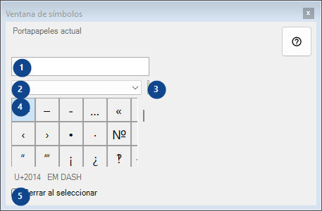
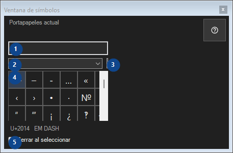

Ventana de símbolos
Para qué sirve
Paleta de caracteres raros: un clic copia el carácter al portapapeles; todo permanece en este equipo.


Orden de uso
Lee las explicaciones numeradas, elige los valores necesarios y continúa con el comando de la ventana.
Elementos
1. Portapapeles actual
Portapapeles actual
Tus atajos2. Conjunto de símbolos
Conjunto de símbolos
Tus atajos3. Buscar símbolos
Buscar por nombre, palabras clave o código Unicode
Tus atajos4. Cuadrícula de símbolos
U+2014 EM DASH
Tus atajos5. Cerrar al seleccionar
Cerrar al seleccionar
Tus atajos